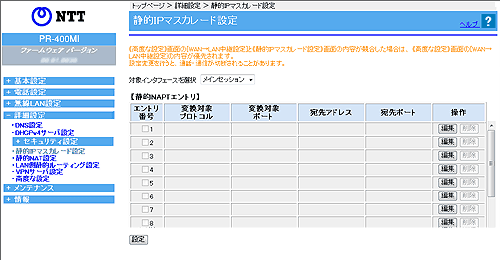
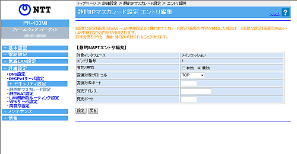

| 静的IPマスカレード設定では、パケット中継時にポート番号の変換も行う場合に設定します。 ここで登録したポート番号を持つパケットについては、IPアドレスとポート番号が共に変換されます。本設定は静的NATの設定よりも優先して処理されますので、ご注意ください。 |
|
| ※「Web設定」画面に表示されているボタンについての説明は こちら | |
|  | |
 対象インタフェースを選択 対象インタフェースを選択 |
||
|
静的IPマスカレード設定を行うインタフェースを選択します。 |
||
|
|
| 編集したいエントリの行末にある［編集］をクリックする 「エントリ編集」の画面が表示されます。 編集後、［設定］をクリックする |
| 削除したいエントリの行末にある［削除］をクリックする |
 |
|
有効/無効 |
||||||||||||||||||
| エントリの有効/無効を選択します。 | ||||||||||||||||||
|
変換対象プロトコル（初期値：TCP） |
||||||||||||||||||
| WAN側に公開したいアプリケーションが使用するプロトコルです。 「TCP」「UDP」「ESP」「TCP/UDP」のいずれかを選択し、「変換対象ポート」の指定も行います。 |
||||||||||||||||||
| 変換対象ポート |
||||||||||||||||||
| WAN側に公開したいアプリケーションが使用するTCP/UDPのポート番号を入力します。 WAN側からはこのポート番号を指定して、LAN側端末上で実行中のアプリケーションにアクセスすることができます。 ポート番号を指定する場合は、1以上65535以下の数値を1つ入力します。 なお、予約済みの名前を入力することもできます。 |
||||||||||||||||||
| 宛先アドレス |
||||||||||||||||||
| LAN側端末のIPアドレスを指定します。 WAN側に公開したいアプリケーションが実行されている端末を指定します。 |
||||||||||||||||||
| 宛先ポート |
||||||||||||||||||
| WAN側に公開したいアプリケーションがLAN側端末上で使用するTCP/UDPポート番号を入力します。ポート番号を指定する場合は、1以上65535以下の数値を1つ入力します。なお、予約済みの名前を入力することもできます。 | ||||||||||||||||||
＜お知らせ＞
|
||||||||||||||||||